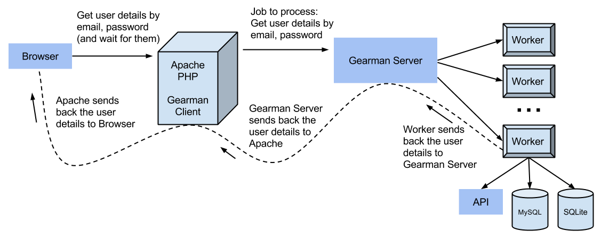

General
What is a service?
Gabriela: A service is a connection between cloudwalkers and a social network. It translates the social network data into cloudwalkers data and vice versa.
What is a stream?
Gabriela: A stream is a body of information specific to each social network connection.
Each social network can have multiple streams in cloudwalkers (our posts, private messages, posts of connections we follow, shares, etc).
Through this streams we interact with that part of the social network.
Each of this streams contains settings, properties, actions, etc, all related info.
What is a channel?
Gabriela: A channel is a combination of streams.
What is a message?
Gabriela: A message is an information set sent by cloudwalkers to a social network or retrieved by cloudwalkers from a social network.
Gabriela
Services
What is a service? Where are they stored?
We store services in services table.
What is a message action?
An action that can be executed on a message by an user.
What happens to comments?
Comments are also messages - children of other messages.
What crazyness is going on in twitter inbox?
We have tweets and mentions and conversations are created based on this 2.
Messages
When are we fetching messages?
Every 5 minutes through the 5min cron.
What happens after we've fetched a message?
We update message data.
What are the message attributes, what do they mean, how do they work?
- Message attributes are the message properties (user, account, subject, body, attachments, etc). They create the message object.
- Visibility status of a message: hidden, show, child.
- When we store it, we strip tags from the body, if it's not marked as html, else we take it as it is.
- When we output it we provide html and plain text (2 strings array).
If it's marked as html, the html part of the result will be a fixed version of the body content and the plain text a trimmed version of the html stripped of tags.
Otherwise, plain text is the body trimmed, and html is the plain text fixed.
- For outgoing messages, we update attachments which leads to storing them through the attachment mapper create() method,
or deleting them through the same mapper (delete()).
What is a conversation? How are conversations used in outgoing messages?
A conversation is a set of messages between two participants. They are used to create the message parent.
What happens when you call any /messages endpoint with ?group=1
We use group=1 in /conversations and it returns the messages grouped in conversations. We get only the last received message from the conversation.
How do we handle message variations?
When a message is created, besides the default message, we save one variation (also a message) for each stream (network),
but the variations are the only ones that are also sent.
How does pagination work?
- Retrieves limited amount of records using given filters.
- Reference: http://www.slideshare.net/Eweaver/efficient-pagination-using-mysql
-
Summary:
- use WHERE and ORDER
- use pre calculated count, increment/decrement vaue as insert/delete happens
- use LIMIT N instead of LIMIT M,N
- provide extra clue about from where to start given page
- find the desired records using more restricted WHERE, given clue, ORDER BY and LIMIT N
There are 2 cursors: "before" and "after".
A cursor is a point between 2 records in an ordered data list.
In order to define the cursor, the columns that are being ordered must be defined and the last parameter of the sort must always be a unique value.
Based on the ordering, this filters the data. For example, if ordering is on date, and "after" is provided, show only the first xx records
ordered on date where date > "before". In case of "before" the list must be reverted twice.
Let's say we have following pages with 10 results per page:
-
Page 1
- dates from 10 june to 3 june
- ids from 150 to 141
-
Page 2
- dates from 3 june to 26 may
- ids from 140 to 131
-
Page 3
- dates from 26 may to 23 may
- ids from 130 to 121
Page 1 -> page 2:
date <= 3 june AND (id < 141 OR date < 3 june)
order DESC, limit 10
Page 2 -> page 3:
date <= 26 may AND (id < 131 OR date < 26 may)
order DESC, limit 10
Page 3 -> page 2:
date >= 26 may AND (id > 130 OR date > 26 may)
order ASC, limit 10
Page 2 -> page 1:
date >= 3 june AND (id > 140 OR date > 3 june)
order ASC, limit 10
When we go back, f.e. page 3 -> page 2, we need to reverse the order to exclude the results from page 1, so we use ASC.
Now we have the 10 correct records, but they are not in the order we want them, so we reverse the array of results.
Steps to add pagination to an endpoint:
- in controller, provide records parameter (the limit) and use it in retrieving data along with filters
- in the mapper, where the data is retrieved, process filters ("after" and "before" - this one reverts order) and return "where";
if order was reverted, add order by clause (DESC) and before returning the output, revert the array back to original order;
once data retrieved, set pagination token per object
- back in the controller, get pagination (Filters) and add the result to the output
What are the various states of outgoing messages
Submitted, scheduled, sent, removed, draft.
Pedro
The great API
- What's a FrontController?
-
Frontcontroller is the first entry point for routing, it will choose what module to load.
By now we have the following modules:
- Cloudwalkers
- CloudwalkersAdmin
- Mailer
- OAuth1
- OAuth2
- Pusherman
- Signin
- What are Controllers and what do they do?
-
Controllers are responsible to handle all the requests from the frontend or 3rd party APPs.
- What's this SubController?
-
This allow to implement submodules by extending the SubController.
Takes a regular Controller as constructor, to pass trough data.
- What does the DispatchAPI Procedure do?
-
DispatchApi is our controllers loader, it takes the controller name from the URL and tries to invoke that controller.
It makes sure the request can be delivered.
SWAGGER
- What's a swagger?
-
Swagger is a specification framework for describing, producing, consuming, and visualizing RESTful web services.
The documentation of methods, parameters, and models are tightly integrated into the server code.
- Where is it stored?
-
Swagger is stored at \docs\api.
You can compile Swagger by using the files documentation.bat (windows) or documentation.sh (linux), this will generate the json files that will define the endpoints in Swagger page this files are stored under folder /schema.
- What is the swagger sandbox?
-
Swagger sandbox is the designation for the area where we can test the endpoints and check the data output sent by the server. This will be very useful for frontend developers and third-party apps developers.
In order to use Swagger sandbox users need to authenticate through OAUTH2 in a near future.
"Little Ken" - TESTING
- Who is Little Ken and where does he live?
-
Little Ken is our API testing server.
He runs under Node.js and Mocha testing framework.
Little Ken lives in the newstorage server (check new relic).
Users Roles
- Authorization to access the endpoints
-
Documentation done at https://devapi.cloudwalkers.be/docs/specs/mailer.html
Mailer
- How do we use the mailer?
-
Documentation done at https://devapi.cloudwalkers.be/docs/specs/mailer.html
- How do we use the mailer in Little Ken?
-
// use this to include mandrill library and methods available to send emails
var mandrill_wrapper = require('mandrill');
// use this to send an email the input string will be the body of the email
mandrill_wrapper.sendEmail(content_string);
- How do we send SMS with a mailer?
-
Exactly as the email but with instance 'sms' and no schedule but sendSms().
$sms = Mailer::getInstance('sms')
->setService(4) // Clickatell
->toUser($user)
->setTemplate('sms/sms')
->setAttribute('subject', $content)
->setAttribute('content', $content)
->sendSms();
Roberto
Database related
- What is a Mapper?
-
A Mapper is the Database interface that contains all the database queries to the Database, which provides the methods to access the information from it.
This can also introduce a layer of security by hiding pieces of sensitive database information (e.g. passwords, security tokens, etc.).
- What is a MapperFactory and why are there multiple ones?
-
The MapperFactory allows to statically define the Mappers, in this case it is a virtual database segmentation of the bits of information that we want to provide.
To separate the information and returning different Models, we need different Mapper entities, which are the bridge between our application and Database.
- What is going on in the MessageMapper?
-
MessageMapper is the object that centralizes all the database queries regarding the Message model.
Models
- What is a model?
-
A model is the object entity that contains the data. E.g. User model is an entity that contains the user data.
Scheduling (of jobs)
- What are the bmgroup\Cloudwalkers\Procedures?
-
The Procedures are the methods that are run through cronjobs and/or Gearman Workers.
- How are the gearman jobs called?
-
The client (which can be a browser, cron, endpoint, etc) does a request to Apache / PHP, a Gearman Client is instantiated and connects to Gearman Server(s) available.
On successful a connection with the Gearman Server, the next step that the Gearman Server does is to add the task / job to the queue.
The Gearman Server then checks on the Gearman Workers that are connected, and checks if they have the "ability" to process the task / job that is on the queue (Gearman Workers can execute different tasks if they are constructed in such way).
When it finds a Gearman Worker that is able to execute the respective task, delegates the execution of that queue item to it.
The Gearman Worker receives the task / job, processes it and returns the details of the task to the Gearman Server
The Gearman Server then returns the respective details to the client that requested the tasks / job.
The request is synchronised through all the path, under the low, normal, high priorities (means that it will wait for the details).
There is also the possibility to execute the tasks in background without waiting for the request to be finished.

- What is the difference between the cronjobs?
-
The cronjobs are executed recurrently, usually they run at a specific amount of time, e.g. every 5 minutes.
With a queueing / messaging system, the tasks are added to a queue to be dispatched.
In our case, the Gearman Server manages the queue, delegates the tasks to the Workers and then receives the operation details.
Doing this with a queuing mechanism, allow us to scale the infra-structure.
Cronjobs are usually more suitable for recurrent tasks (e.g. backups), where Gearman is more suitable for responses that needs a "real-time" processing (e.g. generate resized image and send it to the browser).
On difference also resides in the point, that a task when delegated to the Gearman Worker is processed immediately where thorugh a cronjob is processed in the next execution period.
With cronjobs our minimum period to run tasks, is every minute. And is very difficult control odd time periods and/or a certain number of operations.
E.g. Execute today 18x a certain task, and tomorrow 53x, with cronjobs is hard and difficult to do this and unable to execute above 1440 recurrent daily operations.
- When are messages for the different services fetched?
-
The messages for all different services are obtained through the cronjobs.
- How does the twitter socket job work?
-
It work as regular TCP socket, which only send TCP packets when they are available.
This reduces the requests / round-trips to see if there is information available on the server.
Under this transmission mechanism, Twitter sends information directly to the connected clients, instead of having the requests to send the information thereafter.
Authentication
- Where does authentication happen?
- The authentication is done under the endpoint /user/login which allows the user to authenticate on the Cloudwalkers application.
- Why do we have oauth1 authentication? And where do I register an app?
-
We have OAuth1 to add an layer of security between the Frontend and Backend, which allows API endpoints to be secured.
We can register an application under http://cloudwalkers-engine.local/oauth1/applications which allows us to have a OAUTH_CONSUMER_KEY and OAUTH_CONSUMER_SECRET to be configured in db-local.php.
- How do I register an oauth2 app?
-
We can register an OAuth2 application on the following URL, http://cloudwalkers-engine.local/oauth2/register
- Why do I see an "authorize authentication" message when authenticating my users?
-
If we use an "authorize code" grant, we are authorizing users by the "access token" that was provided through "authorize" method.
- What is openssl authentication and what is it good for? (Tip: resellers)
-
By using an OpenSSL we are introducing methods to authenticate and/or communicate through SSL/TLS, through the use of encrypted traffic.
In this case, we have a PPK (Public / Private Key) to authenticate the Resellers connection to our service, which replaces the OAuth authentication.
Resellers can have a more easier way to setup RESTful connections to our API.
Logging
- What do we log?
-
We log the endpoint requests and if the action was successful.
We also log the specifics when they exists, such as, userId, accountId, serviceId, streamId, messageId.
The date/time start, duration and end of the script execution.
- How do we log?
-
We set the the Logger on the BaseCall and invoke it on the DispatchAPI to log the endpoint request.
Meanwhile, on the Controller we set the specifics if they exists (userId, accountId, serviceId, streamId, messageId).
Keyword monitoring
- How do we handle the keyword monitoring formula?
-
The procedure obtains the defined keywords per client. Each keyword defined is represented as a stream that we want to import.
On the Frontend, we can then filter by the "Stream" / keyword that we defined to import.
- How do we translate the keyword monitoring formula from our syntax to multiple twitter api calls? (Check the Twitter service for this)
-
On the Channels, the formula is built with the following parameters:
-- include
(
message contains 'keyword' { OR message contains 'keyword' }
)
AND
-- exclude
(
message !contains 'keyword' { AND message !contains 'keyword' }
)
AND
-- countries
(
country = 'country' { OR country = 'country' }
)
AND
-- language
(
language = 'language' { OR language = 'language' }
)
Cronjob workflows
-
While playing around with the crons and watching the source code, I generated an graph of the execution, which might be useful to see the workflow execution plans.
- Minute
- 5 Minutes
- Hourly